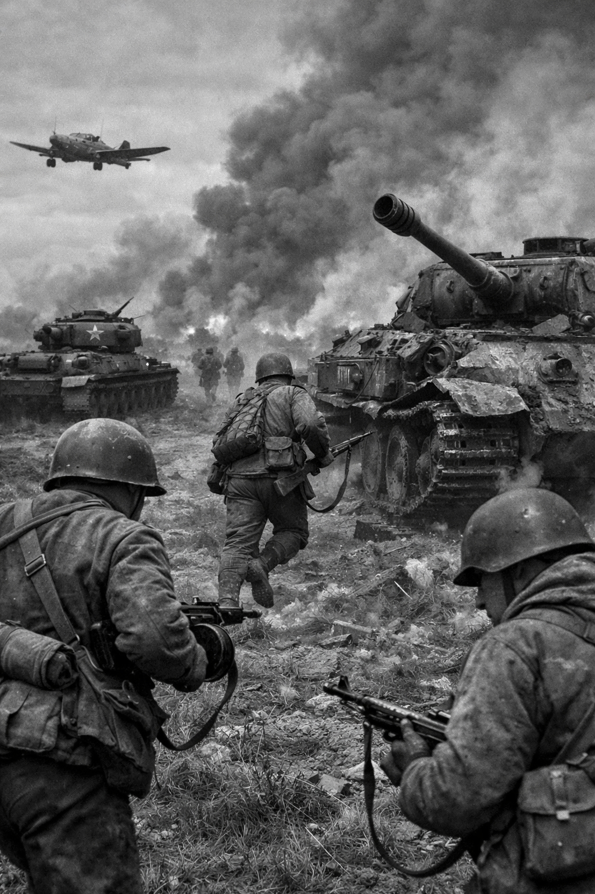

22 juin – 19 août 1944
Biélorussie – Front de l’Est
Alliés : Union soviétique (Fronts de l’Ouest, 1er Baltique, 2e et 3e Biélorussie)
Axe : Allemagne (Heeresgruppe Mitte)
L’opération Bagration est la gigantesque offensive soviétique de l’été 1944 visant à détruire le Heeresgruppe Mitte. Lancée le 22 juin, trois ans jour pour jour après Barbarossa, elle marque l’effondrement du front allemand en Biélorussie et le retour définitif de l’initiative stratégique soviétique.
Les forces soviétiques attaquent sur plus de 1 000 km de front. Les armées du Front de l’Ouest encerclent Vitebsk, Orsha et Mogilev. Les Panzer allemands sont dépassés par la vitesse des T‑34 et l’appui massif de l’artillerie et de l’aviation. En juillet, Minsk est libérée et les restes du Heeresgruppe Mitte sont anéantis.
Victoire écrasante de l’Union soviétique. Plus de 300 000 soldats allemands sont tués ou capturés. Le front de l’Est est désormais ouvert vers la Pologne puis l’Allemagne.
Bagration est l’une des plus grandes offensives de toute la Seconde Guerre mondiale. Elle accélère la chute du Reich et prépare la libération de l’Europe de l’Est. Son ampleur et son succès démontrent la supériorité tactique et logistique atteinte par l’Armée rouge en 1944.